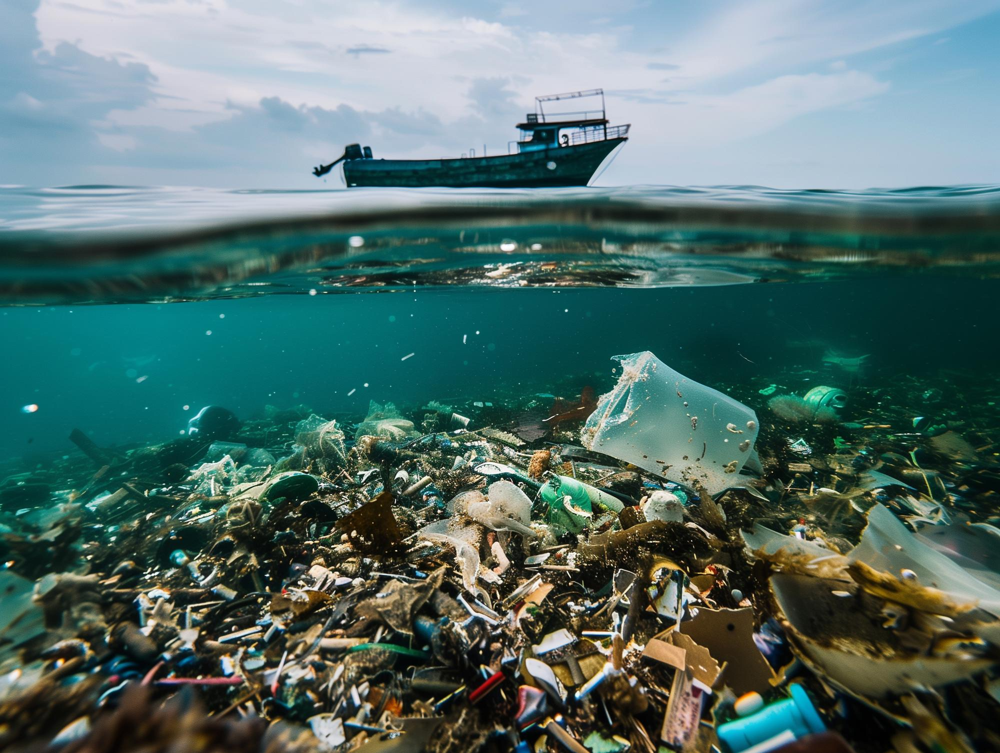
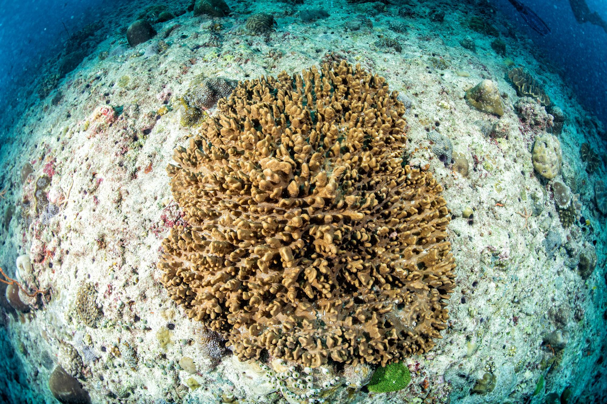
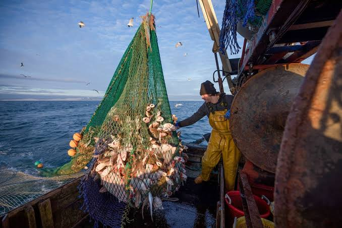

♻️
Poluição marinha
Plásticos, resíduos e substâncias poluentes prejudicam os habitats e colocam animais marinhos em ricos.

Vida na Água
Um dos 17 Objetivos de Desenvolvimento da ONU
da superfície da Terra é coberta por água
um plano global para um futuro melhor
Proteger o mar é proteger o nosso futuro.
Conhecer os desafios é o primeiro passo para transformar preocupação em atitude.

Plásticos, resíduos e substâncias poluentes prejudicam os habitats e colocam animais marinhos em ricos.

O aquecimento e outras pressões ambientais podem danificar os recifes, que abrigam muitas espécies.

A pesca descontrolada ameaça espéciese desequilibra os ecossistemas marinhos.
Dos recifes coloridos às águas profundas, cada forma de vida tem um papel importante no equilíbrio marinho.
Ecossistemas cheios de vida e diversidade.
Animais que dependem de oceanos saudáveis.
Gigantes viajantes dos mares.
Uma rede de vida que mantém o oceano vivo.
Não é preciso morar oerto da praia para ajudar. Nossas escolhas do dia a dia também chegam ao mar.
Prefira itens reutilizáveis e evite desperdícios.
Separe recicláveis e nunca deixe resíduos na natureza.
Não toque, alimente ou retire animais e organismos de seus habitats.
Converse sobre conservação e incentive atitudes responsáveis.
Teste o que você aprendeu sobre a ODS 14
Escolha uma respostas para descobrir!